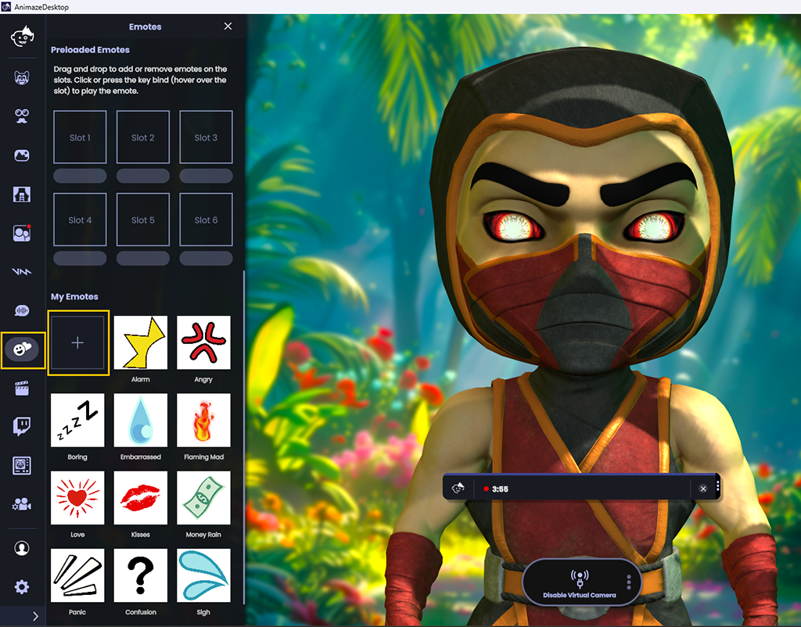
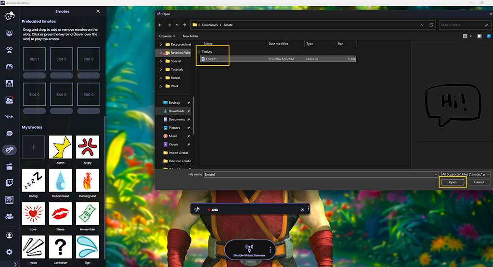
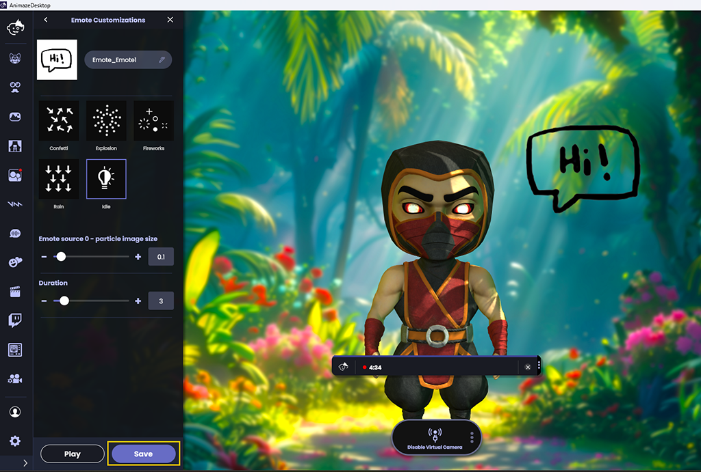

Animaze Desktop: How can I use PNGs as emotes?
Load .png files to use as emotes in your streams and videos. Read on to learn more.
-
Click the Emotes icon to open the Emotes drawer menu.

-
Scroll down and click the “+” button under My Emotes.
-
Browse for a .png file and double-click it to load.

-
Move the loaded .png file to an available slot under Preloaded Emotes by clicking the dragging the emote to the slot.
-
Click the emote or the emote hotkey number (1 through 6) to play the emote.
-
Click Save to save the changes you made.
